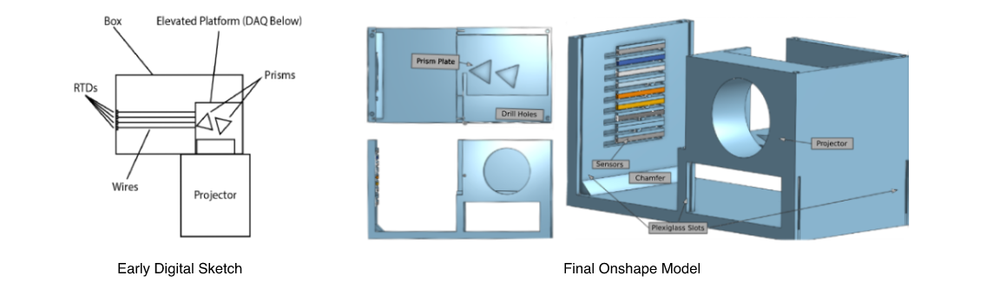

DRS Herschel Project
Demonstrating the Existence of Infrared Light
The main purpose of the project is to replicate Herschel’s discovery of infrared through a portable fixture that houses a data acquisition device and minimizes outside factors like wind. This fixture would be presented to elementary or middle school students for educational purposes. A visible light spectrum is produced through the light from a 550 RF Slide Projector and two glass prisms. Platinum 100 Ohm resistance temperature detectors were placed at the location of the spectrum and at the infrared region. The temperature detectors provided data to the Data Acquisition device, which digitized incoming signals to be presented on the screen of a tablet.

The Design
The fixture needed numerous stages of designs due to the precision required to properly orient the glass prisms. Before any visual design was established, I experimented to determine the location and angle of the prisms and light spectrum. With this information, I drew a quick sketch of a 2-layer platform. In my design, the prisms were arranged on the upper level and the data acquisition device (DAQ) was housed on the lower level beneath the prisms. The spectrum produced would appear on a surface perpendicular to the incident light from the projector. The RTDs (resistance temperature detectors) would be attached to the aforementioned surface. When progressing to modeling my sketch using Onshape, my team decided to implement sliding mechanisms onto the surface. These sliders would allow us to adjust the location of the detectors and eliminate the need to measure the specific location of each color on the spectrum. The wires connected to the RTDs would feed into the DAQ below so as to not obstruct the path of the light.
Proof of Concept: The Optics
After finalizing the prism arrangement and the design, I experimented further and explored the optics of our fixture as a proof of concept. To find the location where light entered and exited each prism, I slowly covered the face of each prism. This information ultimately assisted me in determining the incident and refracted angles. Using a scaled diagram of the prisms, Snell’s Law, and an approximate refractive index of 1.5 for the prisms, I could demonstrate the optics behind the placement of the prisms.